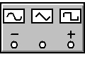
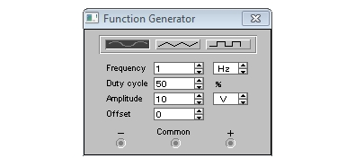

Electronics Workbench
Функциональный генератор
в Electronics Workbench
Функциональный генератор является идеальным источником напряжения, вырабатывающего сигналы синусоидальной, треугольной или прямоугольной формы.

Рис. 1 - Малое изображение генератора
Средний вывод генератора (рис. 1) при подключении к схеме обеспечивает общую точку для отсчета амплитуды переменного напряжения. Для отсчета напряжения относительно нуля этот вывод заземляют. Крайний левый и правый выводы служат для подачи сигнала на схему. Напряжение на правом выводе изменяется в положительном направлении относительно общего вывода, на левом выводе - в отрицательном.
При двойном щелчке мыши на изображении генератора открывается увеличенное изображение генератора на котором можно задать:
- форму выходного сигнала,
- частоту выходного напряжения (Frequency),
- скважность (Duty cycle),
- амплитуду выходного напряжения (Amplitude),
- постоянную составляющую выходного напряжения (Offset).

Рис. 2 - Увеличенное изображение генератора
Источники
studfile.net - Создание схемы радиоэлектронного устройства с помощью программы Electronics Workbench